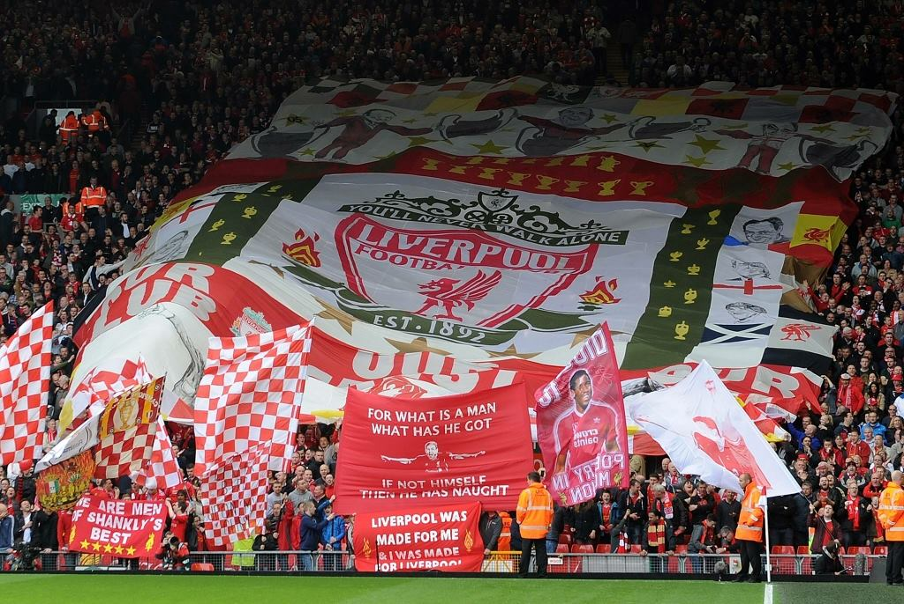

Lfc is one of the best football clubs in the world. They won several trophiesin their ilastiust history. 5 UCL , 18 leages , 7 fa cups , 8 league cups and more.Although they were a great club in the 70s and 80s , the sleeping giants are still sleeping.It has been a rollercoster of a life in the clubs history, the success of trophies dried in the end of the 90s. with the help of the owners and associated stakeholders the club from admistration .In the absence of European games, Liverpool started focusing on the domestic competitions. But after winning two more League titles in 1986 and 1988 and an FA Cup in 1985, tragedy struck again. In the 1989 FA Cup semi-final between Liverpool and Nottingham Forest, 94 fans died in a crowd crush only six minutes after the game had started. To this day, the Hillsborough disaster remains the worst stadium disaster in English football.
In the summer of 1998 Gerard Houllier was appointed joint manager with Roy Evans. But that joint partnership was always destined to end in failure and after four months together Roy Evans left the club. Roy a great servant to the club was never a man to put himself before the club whom he supported as a boy and worked himself up from fringe player to first team manger. He later claimed in one of his last interviews that he didn’t want to be a “Ghost on the Wall” which Is infact what his Autobiography title for his book which was published in 2004.ANevertheless, they proved their mettle in the most exhilaratingfter claiming their ninth League title in 1990, Liverpool entered a downward spiral. With only a c ouple of Cup trophies and some mediocre league finishes in the 90s and early 00s, it seemed like Liverpool's star had waned.
During a pre-season full of speculation Liverpool made the massive coup in signing promising young manager Rafael Benitez from Valencia. “Rafa” as he is known faced an equally big task in bringing together a squad littered with distinctly average players rom the Houllier era. Nevertheless, they proved their mettle in the most exhilarating way possible; after reaching the Champions League final in 2005, they recovered from 3-0 down at h alf-time to eventually beat Milan on penalties.Purchases such as Luis Garcia, Xabi Alonso and Fernando Morientes improved the outlook but the loss of Michael Owen to Real Madrid marred Benitez’s opening months.Rafa Benitez’s first season in charge saw the Reds land their first European Cup for 21 years, defeating AC Milan against the odds in the greatest European Final ever witnessed.
